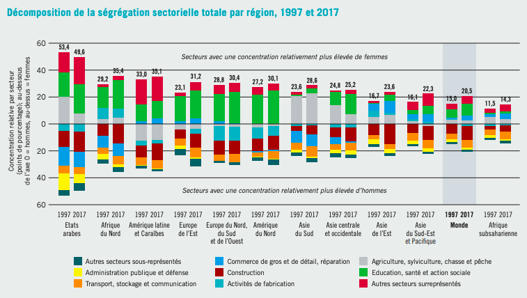
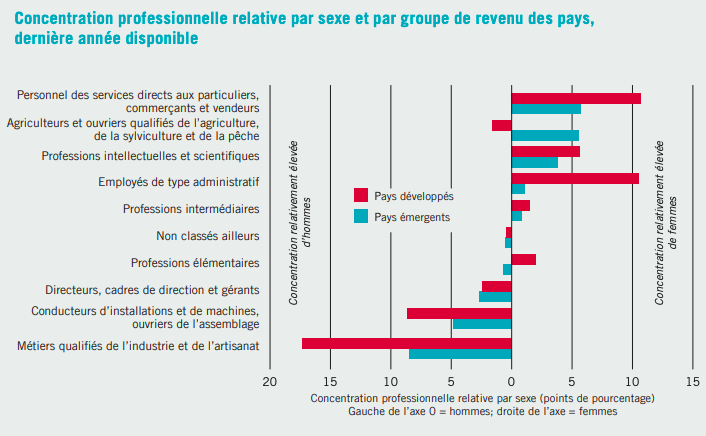
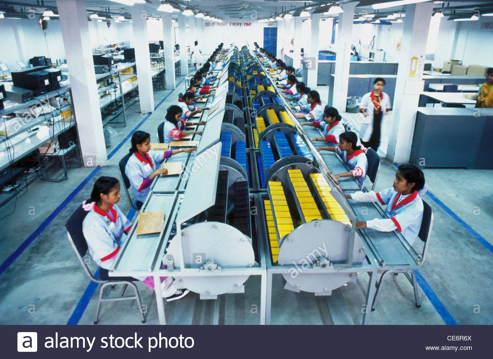

Les
différences de salaires ne se font pas à poste égal, mais dans la sélection de
l’employée.
En
effet dès le plus jeune âge, les jeunes filles sont conditionnées à travailler
dans certains secteurs.
L’éducation,
la santé et le secteur de l’activité sociale restent les plus fréquentés par
les femmes.
L’Asie
récence également un très fort taux de femmes dans le secteur industriel et
plus particulièrement celui de la confection.
Enfin
l’agriculture dans les pays du sud tel que l’Asie Centrale et Occidentale ou
bien l’Afrique Subsaharienne révèlent un modèle économique des sociétés rurale
qui poussent les femmes à aller aider leur mari dans les terres.
Apparait alors le terme de ségrégation sectorielle dans le milieu du travail. Comme on peut le remarquer sur le graphique, c’est dans les pays Arabes qu’elle se veut la plus importante avec un écart de 49,6 % en 2017 : Une légère diminution est tout de même observable depuis 1997 et principalement dans la diminution de femmes présente dans le secteur de l’agriculture.
Emploi et questions sociales dans le monde, Organisation Internationale du Travail, 2017
En plus de ces secteurs d’activité très définis pour les femmes, une ségrégation professionnelle s’applique. Par exemple, beaucoup de femmes dans le secteur de la santé, oui, mais au rang d’aide-soignante ou infirmières. Sur le graphique ci-dessous on voit que l’administratif et le secteur des services recrutent également beaucoup de femmes. Et en parallèle les professions de cadres, directeurs ou gérants sont dominés par les hommes. Comme évoqué dans le chapitre deux, c’est ici que nous nous rendons compte que le plafond de verre est bien concret pour les femmes du monde entier. Les femmes doivent également faire face à des contrats d’emplois moins avantageux. Effectivement en Europe le taux de chômage n’est pas considérablement différent entre les sexes, or il est important de relever le fait que seulement 8,9% des hommes possèdent des contrats d’emploi partiel quand 32,1% des femmes se retrouvent dans ce cas. « S’occuper de leur famille » voilà LA raison qui explique cette différence. Encré dans nos sociétés, l’image de la femme qui doit s’occuper de son foyer parait, encore aujourd’hui, en 2021, bien trop présente.
Emploi et questions sociales dans le monde, Organisation Internationale du Travail, 2017
Intéressons-nous maintenant aux cartes ci-dessous. Elles vont nous permettre d’illustrer et de confirmer les affirmations précédentes.
Effectivement, dans le secteur de l’industrie, on se rend compte qu’il concentre une majorité des femmes en Asie et plus particulièrement en Inde et en Chine. Comme expliqué précédemment, les ateliers de confection dominent le marché. La carte nous permet aussi de nous rendre compte que cela s’est intensifié depuis les années 2000. Parallèlement c’est un secteur qui n’est pas du tout présent en Afrique. Au-delà de ne pas ouvrir aux femmes, l’industrie africaine se veut bien moins développée en comparaison avec l’Asie.
Pour ce qui est du secteur de l’agriculture, on observe que depuis les années 2000 il est toujours bien répandu en Afrique et en Asie. Avec le temps la tendance s’intensifie tout de même plus en Afrique Centrale. L’Afghanistan ainsi que le Pakistan se démarquent également avec respectivement, 64,8% et 64% de femmes employées dans l’agriculture en 2020.
Enfin, comme on pouvait le présager, le secteur des services se veut bien plus étendu au niveau mondial. Il est fortement présent dans le monde Occidental : On recense 90,7% de femmes travaillant dans ce secteur-là aux États-Unis et au Canada. L’Afrique ainsi que l’Asie (plus particulièrement l’Inde, le Népal, l’Afghanistan et le Pakistan), se veulent plus en retrait avec une moyenne approximative de 15% de femmes embauchées dans ce secteur. L’agriculture ainsi que l’industrie dominants le marché du travail des femmes dans ces pays-là.
Pour clore le chapitre, je vous invite à regarder cette vidéo. Elle apporte une réflexion sur les secteurs d’emploi des femmes et l’intérêt économique des pays à réduire ces discriminations.
created with
Website Builder Software .